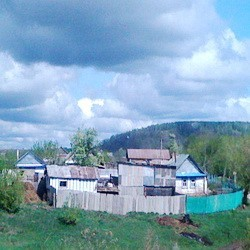

Кзыл-Юлдузский район (тат. Кызыл Йолдыз районы) — бывший административный район Татарской АССР с центром в селе Кутлу-Букаш, существовавший в 1935—1959 годах. История Кзыл-Юлдузский район был образован 10 февраля 1935 года. В его состав вошли: Берсут-Сукачинский, Верхне-Берсутский, Больше-Арташский, Нижне-Суньский, Владимировский, Усалинский, Верхне-Суньский, Средне-Суньский, Мало-Суньский, Кулищинский, Катмышский, Урманчеевский, Еникеево-Чишминский, Албаевский сельсоветы Мамадышского района; Верхне-Тимерликский, Кукеевский, Ямашевский, Алан-Полянский, Больше-Машлякский, Козяково-Челнинский, Каир-Клинчеевский, Кутлубукашский, Кугарчинский, Кучуково-Челнинский, Мямли-Козяковский, Ннжне-Тимерликский, Околоток-Янасальский, Ураево-Челнинский, Шумбутский, Шеморбашский, Юлсубинский, Больше-Кадряковский, Мельнично-Починковский Рыбно-Слободского района; Больше-Саврушский, Старо-Ключинский (Кибячинский) сельсоветы Сабинского района. 8 мая 1952 года район вошёл в состав Казанской области Татарской АССР. 30 апреля 1953 года в связи с ликвидацией областей был возвращён в прямое подчинение Татарской АССР. 26 марта 1959 года Кзыл-Юлдузский район был упразднён, а его территория передана в Мамадышский (Албайский, Верхне-Берсутский, Верхне-Суньский, Владмировский, Катмышский, Мало-Суньский, Нижне-Суньский, Урманчеевский, Усалинский с/с) и Рыбно-Слободский (Биектауский, Больше-Машлякский, Верхне-Тимерлекский, Козяково-Челнинский, Кугарчинский, Кукеевский, Кутлу-Букашский, Мельнично-Починокский, Околоток-Янгасальский, Тябердино-Челнинский, Уреево-Челнинский, Шеморбашский, Шумбутский, Юлсубинский с/с) районы. Административное деление По данным на 1 января 1948 года в районе было 34 сельсовета: Алан-Полянский, Албайский, Берсут-Сукачинский, Биек-Тауский, Больше-Арташский, Больше-Кадряковский, Больше-Машлякский, Верхне-Берсутский, Верхне-Суньский, Верхне-Тимерликский, Владимирский, Еникей-Чишминский, Зянгар-Кульский, Катмышский, Козяково-Челнинский, Кугарчинский, Кукеевский, Кулущинский, Кутлу-Букашский, Мало-Суньский, Мельнично-Починокский, Нижне-Суньский, Нижне-Темирликский, Околодок-Янга-Салский, Средне-Суньский, Стекольно-Заводский, Тябердино-Челнинский, Уреево-Челнинский, Урманчеевский, Усалинский, Шеморбашевский, Шумбутский, Юлсубинский и Ямашевский. Население По данным переписи 1939 года, в Кзыл-Юлдузском районе проживало 45 911 человек, в том числе татары — 82,1 %, русские — 17,2 %.